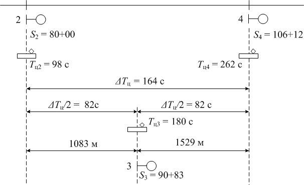
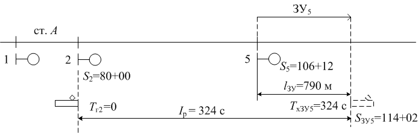
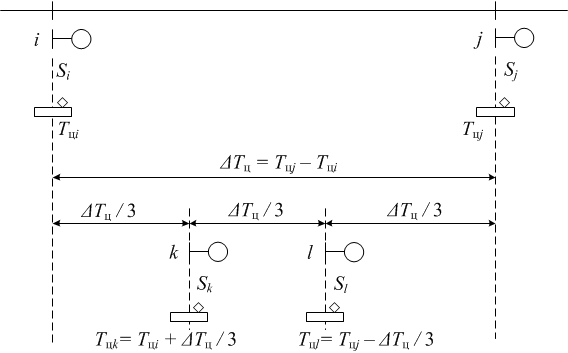

, Вы набрали балл(ов), контрольная работа -
Вопрос 1
К светофорам какой серии относится светофор 3?
Вопрос 2
С какой целью в нормативной методике используются засечки фиктивного времени?
Вопрос 3
По каким причинам между светофорами 2 и 4 размещается только один светофор?

Вопрос 4
По каким причинам длина тональных рельсовых цепей меньше длины рельсовых цепей числового кода?
Вопрос 5
К светофорам какой серии относится светофор 5, если светофор 2 является светофором 2ой серии?
Вопрос 6
Перечень исходных данных для разбивки перегона на блок-участки (расстановки светофоров)
Вопрос 7
Объясните, почему расстояние между i и j делится именно на 3 части
Вопрос 8
Межпоездной интервал -